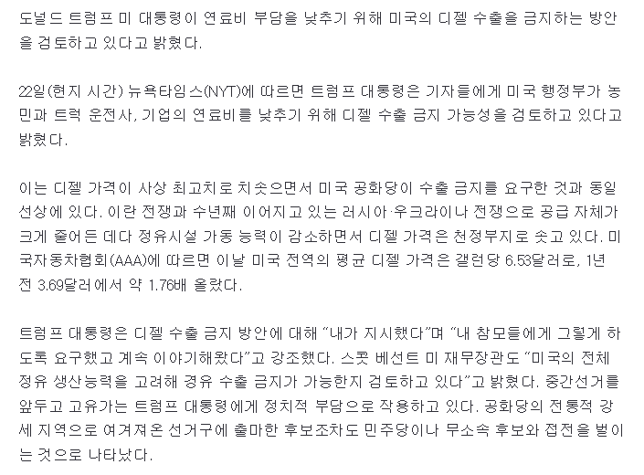

https://n.news.naver.com/mnews/article/011/0004665061?sid=104
현 미국 에너지부 장관도 디젤 수출 진짜 끊으면
미국도 함께 좆된다고 트럼프 주장을 반대하는 중.
하지만 트럼프는 아몰라 무조건 끊어라는 자세를
유지 중이라 이거 언제 터질 지 모름.

https://n.news.naver.com/mnews/article/011/0004665061?sid=104
현 미국 에너지부 장관도 디젤 수출 진짜 끊으면
미국도 함께 좆된다고 트럼프 주장을 반대하는 중.
하지만 트럼프는 아몰라 무조건 끊어라는 자세를
유지 중이라 이거 언제 터질 지 모름.
90일 한정이라 그닥영향없을듯
지금 미국 수확기인데 저런 정책으로 디젤 가격 흔들리면 타격 많이 감
단 7일만 해도 좆됨.
왜 ㅈ되는거임??
수출하기로 계약한거 파기하버리니까 그런가?
미국의 경유 가격은 미국 내 수요와 공급의 균형이 아니라 글로벌 수급에 의해 결정된다”며 “정유제품과 경유를 미국 내에 묶어둔다고 해서 미국 가격의 기준이 되는 세계 가격이 바뀌는 것은 아니다
밀가루 가격 올라서 과자값이 오른건데
과자 수출 막으면 과자 공급이 국내로 돌아서 가격 떨어지겠지? 히히 하고 수출 막겠다는건데
과자회사가 바보도 아니고 국내 소비량만큼만 제 가격에 생산하지 굳이 손해봐가며 가격 낮추지 않는다 그런거지?
기름값이 정유사가 사온 금액에 마진을 붙이는게 아니라, 그때그때 현물시장가격(싱가포르 현물시장, 걸프만 시장가)에 연동시키는 방식인데, 미국 디젤 수출을 막으면 단기적으로는 걸프만 시장가가 내려가서 디젤 가격이 하락 하겠지만, 장기적으로는 정유사가 감산을 할테니까 ㅈ된다 뭐 이런거 같던데
가격은 수요와 공급에 의해 결정됨
수출을 막으면 단기적으론 수요가 감소하니 가격이 하락하겠지만 미국정유사들은 바보가 아니니 공급을 줄임
그럼 경유만 문제가 아니라 휘발유를 비롯한 여러 석유부산물들의 가격이 모두 상승함
간단하게 미국을 망하게 하려는 트럼프의 빅픽쳐임
우리야 물가 올랐네라고 투덜이겠지만 3세계 국가에겐 진짜 밥 한끼 걱정하는 시대가 오는거임
한국처럼 최고가격제 하고 입싹닦아버리면 되는데...
세금으로 손실 매워주는데 먼 ㅋㅋㅋ
인플레이션만 가속화 될 거 같은데
저래도 탄핵 안 하는거보면 지들은 살만한 갑지
쟤네도 선이 있네 ㅋㅋ
금리도 1퍼까지 낮춰달라 해도 안낮추고 ㅋ
꼭 해라 전세계 좆되게 ㅂㅅ ㅋㅋㅋㅋ
진짜 저러면 이래저래 동남아만 죽어나가겠군...
초딩이 떼쓰는 것 같네 ㅠ
저건 진짜 좆되는거라 측근들이 뜯어말리면 "고뢔?"하고 또 번복할게 뻔함